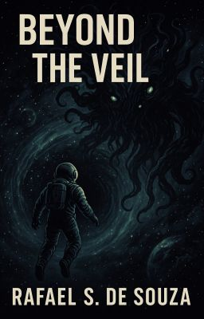
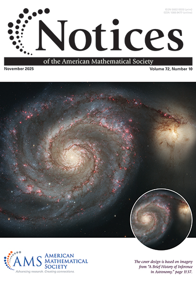

The City of Endless Time
In a city transformed by time travel, babies enter universities and return as adults while rapid population growth strains the city’s infrastructure.
The hour arrives.
Rain has passed.
The air is cool and shimmering with ions.
Beyond the Rainbow
Xuenan Cao and Rafael S. de Souza

In a city transformed by time travel, babies enter universities and return as adults while rapid population growth strains the city’s infrastructure.

Captain Jameson travels to the Great Attractor in search of answers but instead finds a Lovecraftian cosmic horror that reveals the true nature of the universe to him.
Notices of the American Mathematical Society 72(10), 1137–1145.
